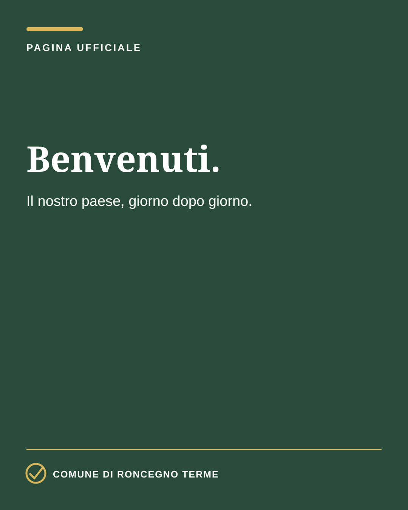
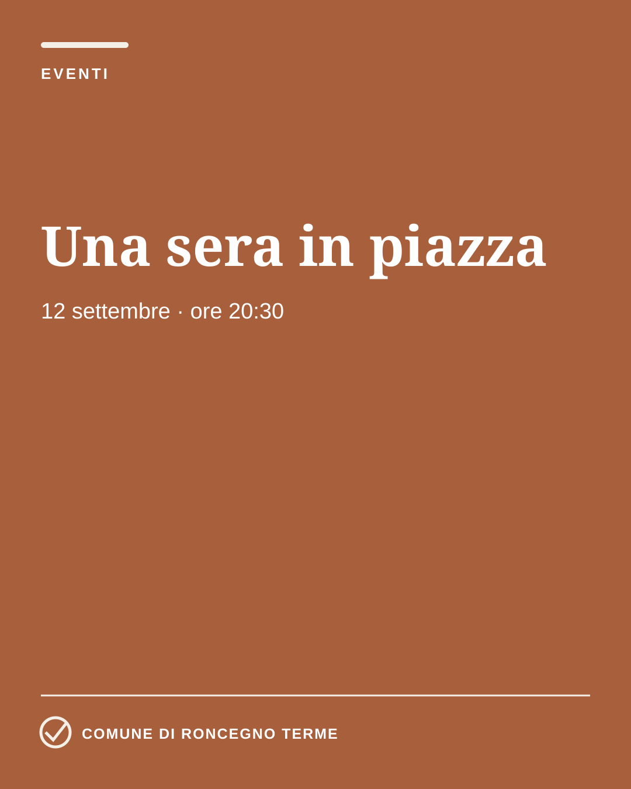
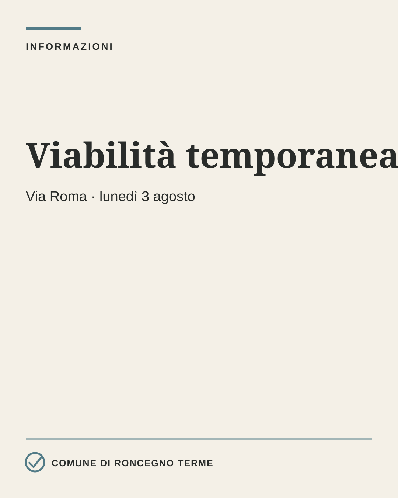
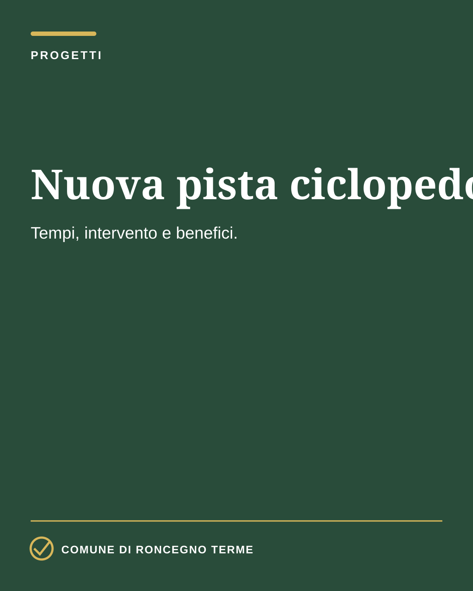
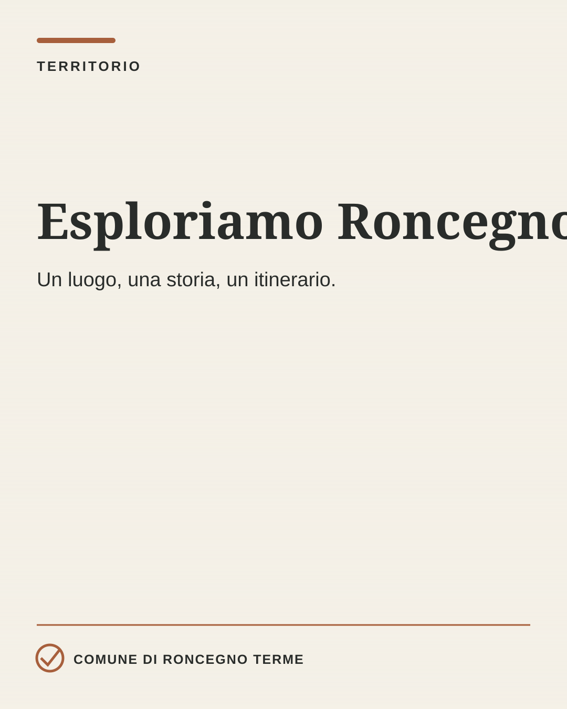
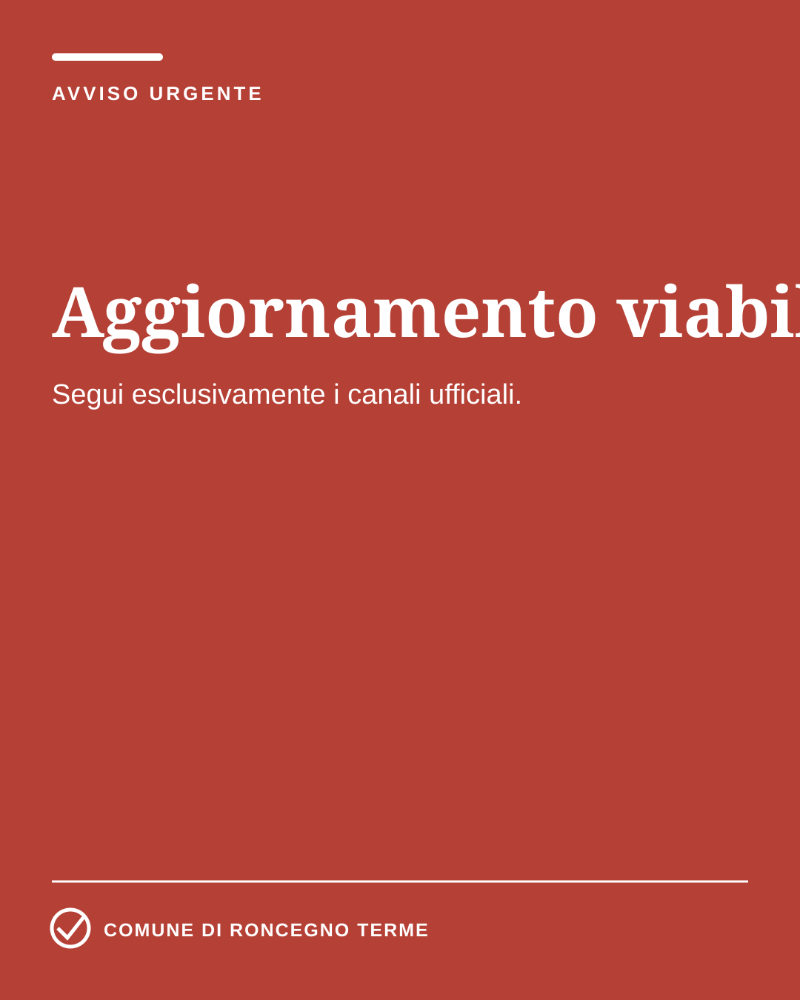

4. Prototipi social
Le applicazioni qui sotto sono file SVG modificabili. Lo stemma è ancora un segnaposto: verrà sostituito solo con il file vettoriale ufficiale.






5. La cartina come rubrica territoriale

La cartina illustrata diventa un filo narrativo ricorrente, senza definire l’intera pagina. Potrà introdurre itinerari, luoghi, rifugi, cultura e curiosità, alternandosi a informazioni, servizi, eventi e progetti.
7. Uso dell'intelligenza artificiale
L'IA è uno strumento di produzione, non una fonte. Ogni dato deve essere verificato e ogni immagine che rappresenta persone, luoghi o opere deve essere autentica.
Consentito
Bozze, sintesi, adattamenti, sottotitoli, controlli e varianti.
Vietato
Inventare fatti, cittadini, dichiarazioni, edifici o paesaggi.
Obbligatorio
Verifica umana, fonte ufficiale, approvazione e archiviazione.